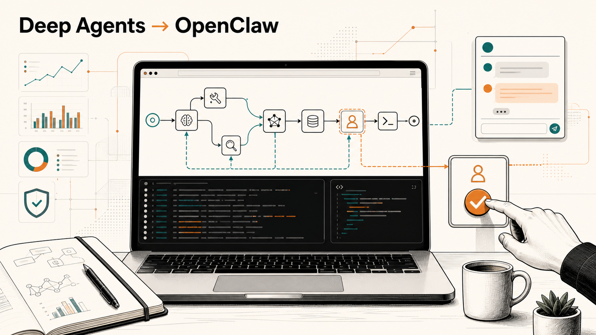

00 · введение
Deep Agents Workshop · СберХаб Петербург
Deep Agents → OpenClaw
Короткая вводная рамка перед deck: зачем нужен агентный цикл, где появляется контроль человека и почему notebooks остаются главным артефактом воркшопа.

дальше: основной deck
open index.html